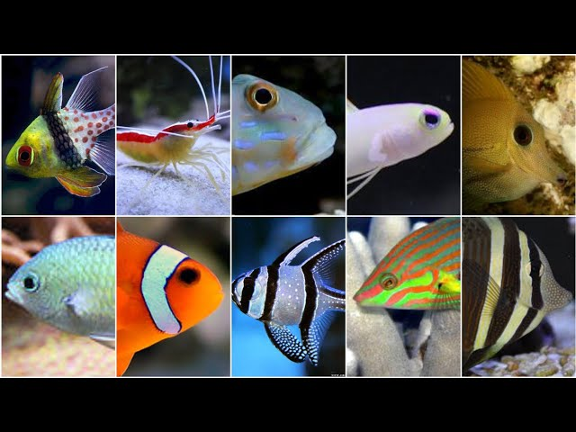

- Ficología:
Es la rama que se encarga de estudiar las algas. Y es que, estas son la base de gran parte de la vida bajo el agua. Esta subdisciplina estudia los cambios ambientales que afectan al ecosistema subacuático, los cuales afectan primero las algas y luego se extienden al resto de los anima.
Ecosistemas marinos
Flora marina
- Macroalgas
Las macroalgas son un tipo de alga marina de tamaño macroscópico, multicelulares en general y que por lo tanto se diferencian de las microalgas, las cuales son de tamaño microscópico y son unicelulares. Las macroalgas no deben confundirse con la pradera marina, la cual es un lecho marino poblado por plantas vasculares y no por algas. Entre las macroalgas más conocidas se encuentran el sargazo y el kelp, el cual conforma los bosques de algas, uno de los ecosistemas marinos más importantes.
- Pastos marinos
Las praderas de pastos marinos son un tipo de ecosistemas marinos que están conformadas por plantas angiospermas,los cuales componen densos pastizales submarinos adheridos a los sedimentos (y sustratos tales como lodo, arena, arcilla y rocas) en áreas poco profundas a lo largo de las costas.Este tipo de praderas están consideradas como las únicas plantas marinas que se encuentran completamente sumergidas bajo el mar,ocupando tan solo el 0,2 % del fondo marino. Cuando la marea baja, estas plantas se llegan a observar cerca de la costa como una gran alfombra verde.
- Microorganismos marinos
Los microorganismos marinos son de gran importancia debido a que la mayoría de estos realizan la descomposición de la materia orgánica y la producción primaria en los ecosistemas marinos. Debido a su gran abundancia, los organismos fitoplanctonicos (clorofílicos) tales como diatomeas son los responsables de la mayor producción, por medio de la fotosíntesis, de oxígeno al año en todo el planeta; siendo mayor que la producción de todos los bosques, junglas y selvas del planeta juntos. La mayor parte de los microbios marinos son bacterias y microalgas, aunque también existe una diversa variedad de microhongos.
- Herpetología
Ir al incio del articulo
estudia los anfibios y reptiles.
Fauna marina
La fauna marina está compuesta por animales u organismos planctónicos no clorofílicos, y son conocidos desde el punto de vista de la productividad terrestre como heterótrofos. Comprenden una multitud de formas, tamaños y colores. La fauna marina está representada por varios grupos, desde formas unicelulares entre las que se encuentran los protozoos como dinoflagelados, foramíniferos y radiolados, hasta animales vertebrados como los peces e invertebrados tales como las medusas, los corales, las esponjas, los crustáceos, las estrellas de mar, los moluscos, etc. La fauna marina es muy importante ya que desempeña un papel crucial en la transferencia de la energía sintetizada por el fitoplancton a los animales superiores de la cadena trófica como los peces, por ejemplo atunes y sardinas.
- Reptiles marinos
Los reptiles marinos son reptiles que se han adaptado a la vida acuática o semi-acuática en un ambiente marino.
Los primeros reptiles marinos fueron los mesosáuridos, que surgieron en el período Pérmico, en la era Paleozoica. Durante el Mesozoico, muchos grupos de reptiles se adaptaron a la vida en los mares, incluidos los subtipos conocidos, tales como los ictiosaurios, plesiosaurios (anteriormente incluidos en el grupo "Enaliosauria", mosasaurios, nothosaurios, placodontes, thalattosaurios, Thalattosuchia y las tortugas marinas (del orden Testudines).
- Aves marinas
Las aves marinas son un tipo de aves adaptadas para la vida en hábitats marinos. Si bien son muy distintas entre sí en cuanto a su estilo de vida, comportamiento y fisiología, suelen manifestar casos de evolución convergente, dado que desarrollaron adaptaciones similares ante problemas idénticos, relacionados con el ambiente y los nichos de alimentación.Las primeras aves marinas evolucionaron en el período Cretácico, aunque las familias modernas surgieron en el Paleógeno.
- Ictiología.
Estudia todo lo relacionado con los peces, y es una rama bastante amplia.

- Mamalogía marina
Ir al incio del articulo
Estudia únicamente los mamíferos como ballenas, delfines, marsopas, focas, leones marinos y morsas. Se hacen investigaciones sobre sus hábitos alimenticios, de apareamiento y su sentido de comunidad.
- Mamíferos marinos
Los mamíferos marinos son un grupo variado de aproximadamente 130 especies de mamíferos que se han adaptado a la vida en el mar o dependen de él para su alimentación. El término mamífero marino no designa a un conjunto taxonómico preciso. En este grupo se incluyen los cetáceos (ballenas, delfines y marsopas), los sirenios (manatíes y dugongos), los pinnipedos (focas verdaderas, otarios y morsas) y algunas nutrias (la nutria marina y el gato de mar). El oso polar, aunque no es un animal acuático, también se suele agrupar con los mamíferos marinos debido a que vive en los hielos marinos durante todo o la mayor parte del año y a su alto grado de adaptación a la vida en el mar.
- Oceanografía
Se encarga de estudiar las profundidades marinas y todo lo relacionado con ellas. Estudia los aspectos físicos, químicos, y dinámicos relacionados íntimamente con los mares y océanos.
- Estudios ambientales
Se encarga de estudiar los efectos que sufre el entorno de las criaturas.